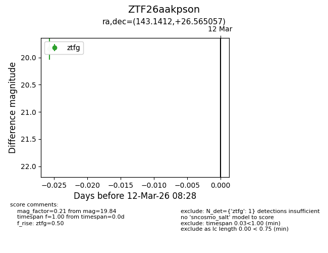
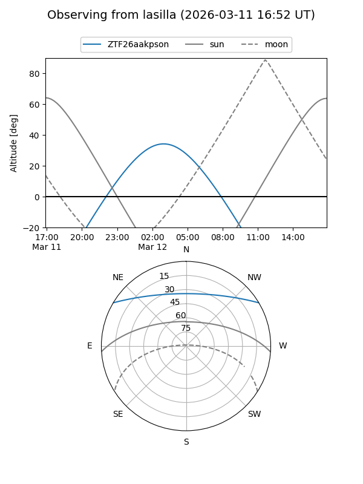
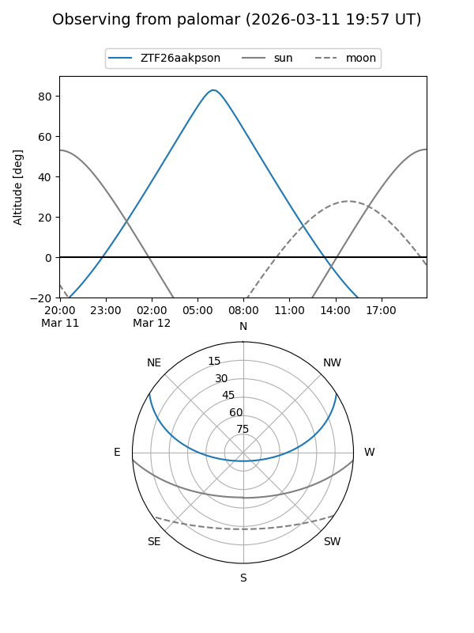

ZTF26aakpson
Target ZTF26aakpson at 2026-03-12 08:30
Aliases and brokers:
FINK: link
Lasair: link
ALeRCE: link
alt names
ZTF26aakpson (ztf,fink_ztf)
Coordinates:
equatorial (ra, dec) = 143.1412,+26.56506
equatorial (HMS+DMS) = 09:32:33.89,+26:33:54.21
galactic (l, b) = (201.7951,+45.93837)
Flags:
Photometry:
last ztfg=19.84
1 ztfg detections
Lightcurve

Visibility


Additional plots